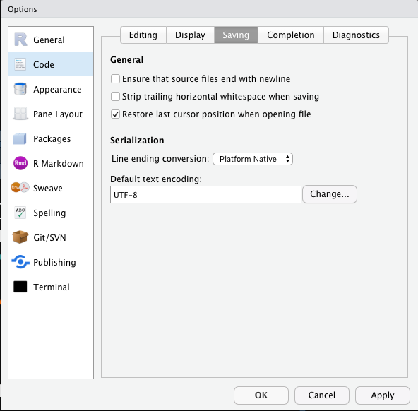

Chapter 2 R Fundamentals
- Download R: R-Project
- IDE: RStudio
- Tutorials: Online Learning

2.2 Installing RStudio
After you install R, you may install RStudio. RStudio is an editor which can help you write R codes. A good analogy is that R is the engine and Rstudio is the dashboard of the car.


Please download the right version that is compatible with your PC operating system.
- https://www.rstudio.com/download
- Choose
RStudio Desktop
-
Important notes:
- Do not have Chinese characters in your directory names or on the path to the files
-
Do not have spaces and weird symbols in your file path:
-
D:/R -
D:/Rstudio -
/User/Alvinchen/
-
2.3 The Interface of Rstudio
When you start Rstudio, you will see an interface as follows:
- Rstudio Interface:
- Editor: You creat and edit our R-related files here (e.g.,
*.r,*.Rmdetc.) - Console: This is the R engine, which runs the codes we send out either from the file or directly from the console input
- Output: You can view graphic outputs here
- Editor: You creat and edit our R-related files here (e.g.,
The R console is like a calculator. You can type any R code in the console after the prompt > and run the code line by line by pressing enter. All the above examples ask R to run lines of codes and print the results directly in the console.
## [1] 2## [1] 2.302585## [1] 1 2 3 4 52.4 Assignment
You can assign any object created in R to a variable using <-:
Now the objects are stored in the variables. You can print out the varialbes by either making use of the auto-printing (i.e., the variable itself auto-prints its content) or print():
## [1] 5## [1] 5## [1] "wonderful"## [1] "wonderful"2.5 Data Structure
In R, the most primitive object is a vector. There are two types of primitive vectors: (a) numeric and (b) character vectors. In our previous examples, x is a numeric vector of one element; y is a character vector of one element. All elements in the factor have to be of the same data type.
You use c() to create a vector of multiple elments. Within the parenthesis, you concatenate each element of the vector by ,:
## [1] 1 2 3 4 5 6## [1] "wonderful" "excellent" "brilliant"Data structures that you often work with include:
- List:
- Data Frame:
- Matrix
## [[1]]
## [1] "First element"
##
## [[2]]
## [1] 5 6 7 8 9 10
##
## [[3]]
## [1] TRUE## [,1] [,2] [,3]
## [1,] 1 5 6
## [2,] 3 8 19ex_df <- data.frame(
WORD = c("the", "boy", "you","him"),
POS = c("ART","N","PRO","PRO"),
FREQ = c(1104,35, 104, 34)
)
ex_df2.6 Function
2.7 Script
Earlier you run R codes by entering each procedure line by line. You can also include all our R codes in one script file, which usually has the file extension of .R. And then you can run the whole script all at once in the Rstudio.
First you open the *.R script file in Rstudio, which should appear in the Editor frame of the Rstudio. To run the whole script from start to the end, select all lines in the script file and press ctrl/cmd + shift + enter. To run a particular line of the script, put your mouse in the line and press ctrl/cmd + enter.

2.8 Library
R, like other programming languages, comes with a huge database of packages and extensions, allowing us to do many different tasks without worrying about writing the codes all from the scratch. In CRAN Task Views, you can find relevant packages relevant to a specific topic or task.
To install a package (i.e., library):
2.9 Setting
Always set your default encoding of the files to UTF-8:

2.10 Seeking Help
In the process of (learning) programming, one thing you will never be able to dodge is a strong desire for help. Here are the sources you may seek help.
Within Rstudio, in the R console, you can always use ? to check the documentation of a particular function. When you run the command, you will see the documentation popping up in the output frame of the Rstudio.

Figure 2.1: Help 1
If you need help from others, the first step is to create a reproducible example. The goal of a reproducible example is to package your problematic code in such a way that other people can run it and feel your pain. Then, hopefully, they can provide a solution and put you out of your misery.

Figure 2.2: Help 2
So before you seek help from others (or before you yell at others for help, cf. Figure 2.2) :
First, you need to make your code reproducible. This means that you need to capture everything, i.e., include any library() calls and create all necessary objects (e.g., files). The easiest way is to check the objects listed in the
Environmenttab of the Rstudio and identify objects that are relevant to your problematic code chunk.Second, you need to make it minimal. Strip away everything that is not directly related to your problem. This usually involves creating a much smaller and simpler R object than the one you’re facing in real life or even using built-in data.
That sounds like a lot of work! And it can be, but it has a great payoff:
80% of the time creating an excellent reprex reveals the source of your problem. It’s amazing how often the process of writing up a self-contained and minimal example allows you to answer your own question.
The other 20% of time you will have captured the essence of your problem in a way that is easy for others to play with. This substantially improves your chances of getting help!
The following is a list of resources where people usually get external assistance quickly:
- http://www.r-project.org/mail.html
- http://stackoverflow.com/
- Quick R: http://www.statmethods.net/
- R CRAN Task Views: https://cran.r-project.org/web/views/
- R for Data Science
- R communities:
- R-Bloggers: https://www.r-bloggers.com/
- kaggle: https://www.kaggle.com/
- stackoverflow: https://stackoverflow.com/questions/tagged/r
- rstudio: https://community.rstudio.com/
2.11 Language Learning Ain’t Easy!
Learning R is like learning another foreign language. It should be a long journey. You can’t expect yourself to learn all the vocabuary of the new language in one day. Also, you will forget things you learn all the time. Everyone’s been there. When your script does not work as expected, don’t be frustrated. Take a break and resume later. What I can say is that: it is always NORMAL to debug a script for hours or even days via endless searches on Google.
That being said, here I would like to share with you some of the most common problems R may usually run int:
- You created an R script file (
*.r) and opened it in the Rstudio, but the script didn’t work simply because you didn’t execute the script in R console (i.e., you didn’t send the script to R console.) - If you get an error message, saying
"object not found", check the object name again and see if you have mistyped the name of the object. If not, check your current environment and see if you have fotgot to execute some assignment commands in the previous parts of the script (i.e., the object has NOT even been created yet). - If you get an error message, saying
"function not found", check the function and see if you have the correct name. Or more ofte, check if you have **loaded" the necessary libraries where the function is defined. To understand the meaning of the error messages is crucial to your development of R proficiency. To achieve this, you have to know very well every object name you have created in your script (as well as your environment). For example:
- What type of object is it? (i.e., the
classof the object, e.g.,vector,list,data.frame?) - For primitive vectors, what type of vector is it? (e.g.,
numeric,character,boolean,factor?) - What is the dimensionality of the object? (
nrows,ncols?)
- What type of object is it? (i.e., the
Sometimes the script fails due to the syntactic errors. Pay attention to all the punctuations in every R command. They are far more important (or lethal) than you think. They include:
,: commas between arguments inside a function": quotes for strings/characters(): parentheses for functions{}: curly brackets for control structures
- From my experiences, about 80 percent of the errors may in the end boil down to a simple typo. No kidding. Copy-and-paste helps.
- DO NOT assume that your R script always works as intended! Always keep two questions in mind:
- Did R produce the intended result?
- What is included in the R object?
2.12 Keyboard Shortcuts
The best way to talk to a computer is via the keyboard. Scripting requires a lot of typing. Keyboard shortcuts may save you a lot of time. Here are some of the handy shortcuts:
Crtl/Command + Enter: run the current line (send from the script to the console)Crtl/Command + A: select allCrtl/Command + C: copyCtrl/Command + X: cutCtrl/Command + V: pasteCtrl/Command + Z: undo(Mac) Alt/Option + Left/Right: move cursor by a word(Windows) Ctrl + Left/Right: move cursor by a word(Mac) Command + Left/Right: move cursor to the beginning/end of line(Windows) Home/End: move cursor to the beginning/end of line(Mac) Command + Tab: switch in-between different working windows/appsCtrl/Command + S: save fileCommand + Shift + C: comment/uncomment selected lines